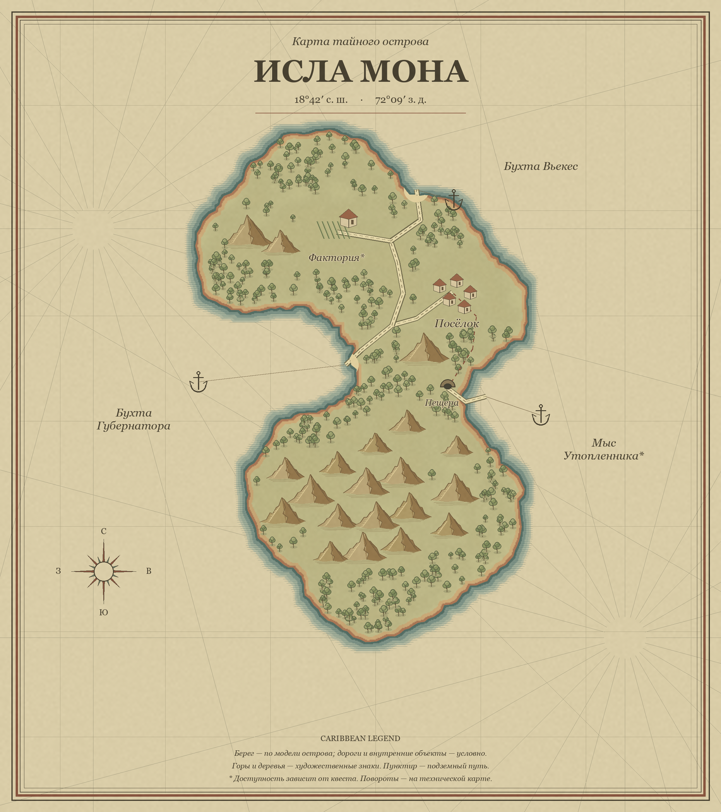

Увеличьте карту для чтения подписей. Увеличенное изображение можно прокручивать в обе стороны.

Загрузка карты…


Пути к посёлку
Бухта Губернатора
На первой развилке — налево.
Бухта Вьекес
На второй развилке — налево, затем на первой — направо.
Мыс Утопленника
Пещера, подвал, дом в посёлке. Это подземный путь, а не лесная дорога.
Как читать карту
Контур взят из трёхмерной модели острова, названия и координаты — из ресурсов игры. Фактория — игровое название хозяйственного объекта.
Внутренние объекты и изгибы дорог размещены условно: наземные локации — отдельные сцены. Рисованные горы, деревья и песчаные пляжи — оформление, а не съёмка местности. Для сторон поворота используйте подсказки, а не геометрию дороги.
Повороты восстановлены по моделям, но прохождение персонажем не проверено. Доступность мыса, фактории и отдельных переходов зависит от этапа квестов.